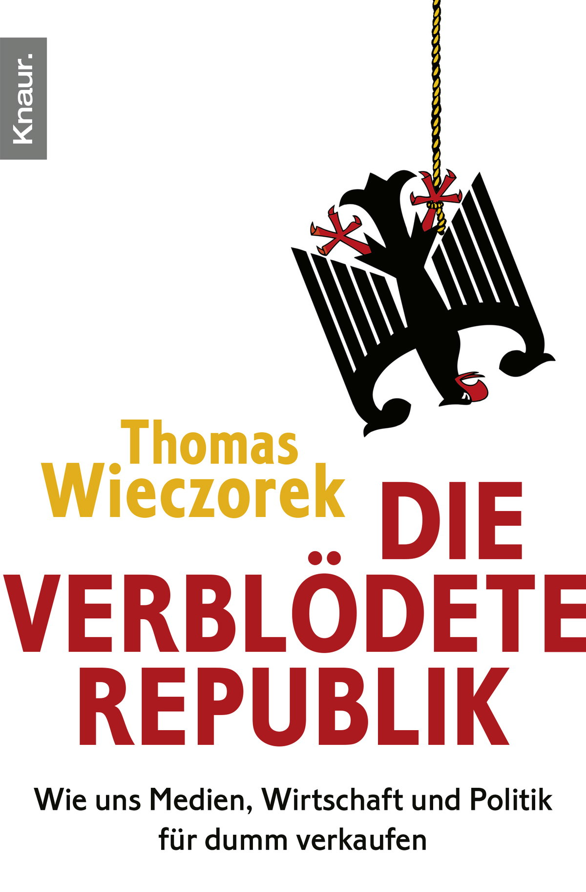

29:33 · 3 OPERE
Aspetti dell'epoca della conoscenza.
Il filo del discorso
Dr Divago prende avvio dall’uso polemico delle parole nella comunicazione della pandemia e contesta etichette che, a suo giudizio, sostituiscono la confutazione degli argomenti. Il discorso accosta titoli di giornale, linee guida per l’assistenza a domicilio e manifestazioni contro le restrizioni, leggendoli come indizi di una perdita di coerenza fra racconto pubblico ed esperienza. La vicenda dell’acqua contaminata di Flint diventa un esempio della funzione critica di chi rende visibili problemi negati dalle istituzioni. Il nucleo bibliografico è Die verblödete Republik di Thomas Wieczorek, del quale Dr Divago traduce due passi sul cittadino informato e sulla popolazione resa più facile da governare quando rinuncia alla realtà. Il richiamo a Kant lega la critica dei media all’autonomia del giudizio. La notizia del crollo di Arecibo, presentata da un giornale attraverso James Bond, offre poi l’occasione per chiedere un’informazione capace di aprire domande scientifiche anziché ridurre ogni evento a intrattenimento. Il finale ricorre alla bacinella scambiata per l’elmo di Mambrino nel Don Chisciotte per discutere il consenso che può rafforzare un’illusione. La scheda distingue queste immagini e valutazioni dalle affermazioni sanitarie, dalle accuse non documentate e da alcuni dettagli scientifici e storici da correggere.
I libri nel discorso

Die verblödete Republik. Wie uns Medien, Wirtschaft und Politik für dumm verkaufen
Copertina: Knaur eBook, 15 gennaio 2010, 336 pagine nel catalogo, ISBN 9783426400555; copertina digitale ufficiale. Edizione cartacea originale Knaur 2009, ISBN 9783426780985, catalogata con 318 pagine. Non si equiparano automaticamente le paginazioni dei due formati.
Copertina autentica Knaur: fondo bianco, aquila capovolta, nome giallo e titolo rosso. È la copertina ufficiale dell’eBook 2010, non un’immagine riconosciuta nel filmato come esatto esemplare 2009. Il server restituisce JPEG pur con percorso png: estensione locale normalizzata senza modificare i pixel. Il libro non viene presentato come disponibile in traduzione italiana.
Die verblödete Republik, 2009, sottotitolo sui media, l’economia e la politica; il relatore dichiara letture alle pagine 23 e 29.
Passaggio 18:08 ↗ · Fonti e libro ↗
Risposta alla domanda: che cos’è l’Illuminismo?
Copertina della raccolta che comprende il saggio sull’Illuminismo: Firenze University Press · Sette scritti politici liberi · 2011 · a cura di Maria Chiara Pievatolo
Copertina del volume cartaceo FUP che comprende il saggio, riscontrato dal catalogo universitario. L’ISBN appartiene alla raccolta; il filmato non annuncia un’edizione e il titolo del saggio è un’identificazione probabile della citazione.
Kant, Che cos’è l’Illuminismo, richiamo esplicito al cittadino intellettualmente adulto.
Passaggio 18:50 ↗ · Fonti e libro ↗
Don Chisciotte della Mancia
Copertina: Newton Compton · Vintage · edizione di riferimento
Cervantes, Don Chisciotte, bacinella del barbiere interpretata come elmo e scena dell’osteria.
Passaggio 26:06 ↗ · Fonti e libro ↗